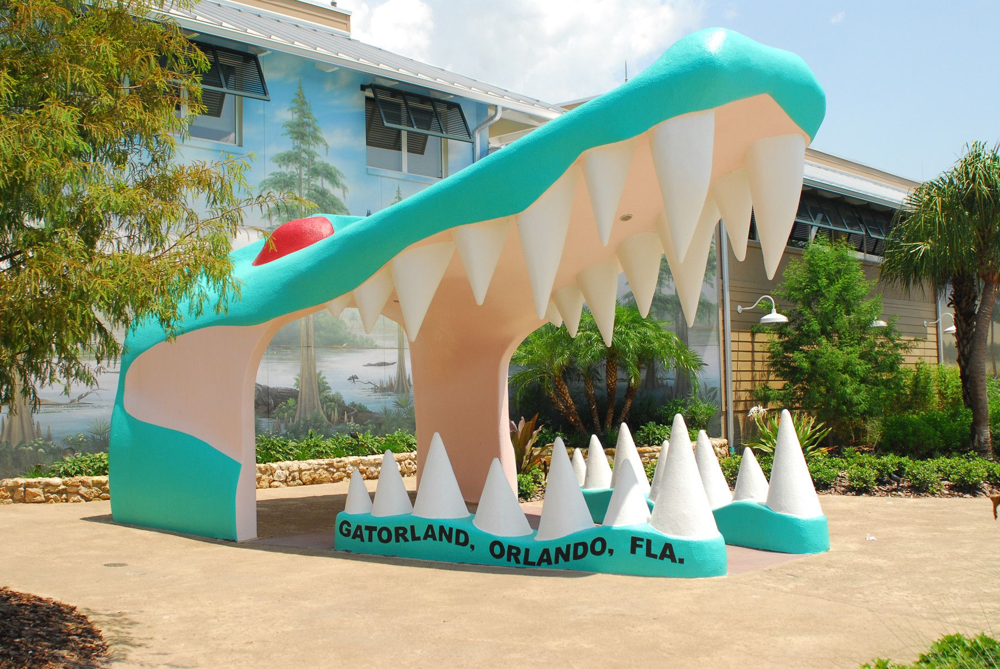
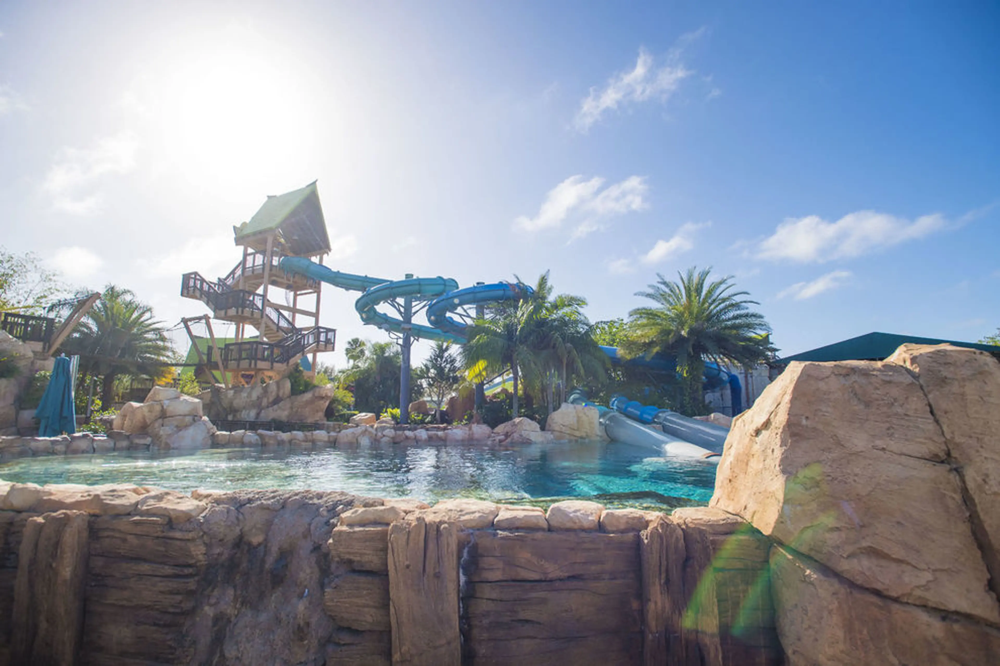

It would be dumb to deny that theme parks are not the main attraction to any visit to Orlando.
They are the entire reason this city is as popular as it is.
However, many people only focus on
the big players when deciding to travel to Orlando,
while also ignoring many smaller attractions
that could make their trip much more enjoyable.
Here are the ones we recommend because
of how much they reflect the beauty of Orlando itself.
Gator Park

Gatorland is a nature reserve and theme park combination that showcases the fauna of Florida in a way that protects and benefits the animals it holds.
It allows its guests to interact with the many animals in their nature reserves, learn and understand about the nature of Florida, take ziplines, and adventure through many other parts of the park that cross over with nature.
Aquatica

Founded in 2008, Aquatica has been a success since the first year its been running, reaching 1 million visitors in the first year it opened. It focus is mainly being
water park a whole family could enjoy, but it also holds many animals for guests to interact with. Dolphins, sting rays, sea turtles and many more animals are showcased within the theme park.